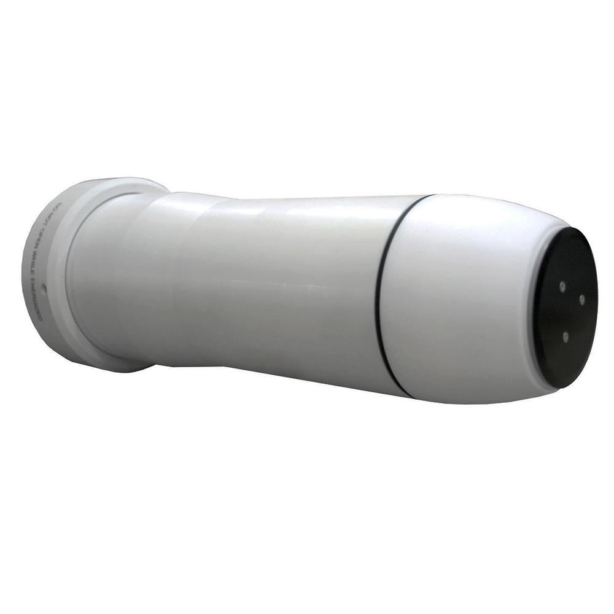
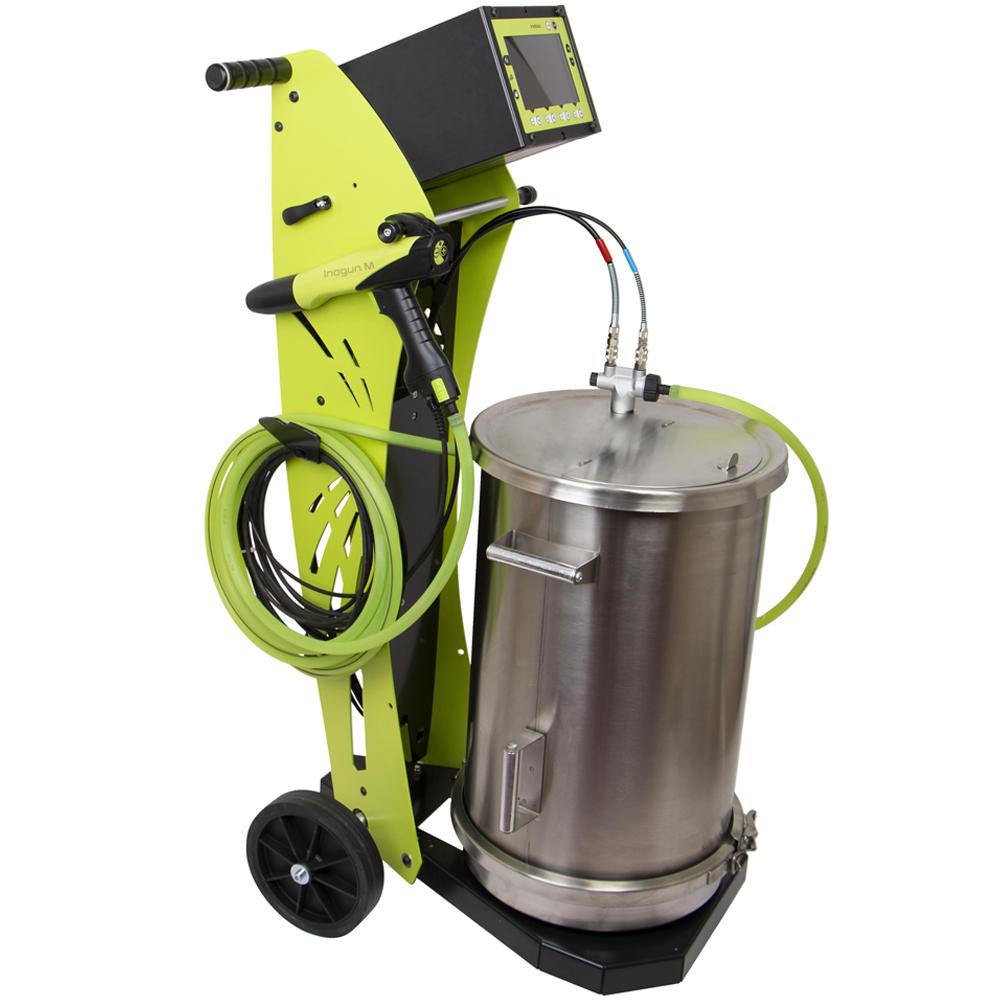

SAMES · ОКРАСОЧНОЕ ОБОРУДОВАНИЕ
Inobell
Распылитель с вращающейся чашкойРаспылитель для электростатического нанесения порошковых покрытий с вращающейся чашкой.
Подробнее о модели →Оборудование для промышленных окрасочных процессов. Описания перенесены с сайта NOVATEK и отредактированы для удобства чтения.

Распылитель для электростатического нанесения порошковых покрытий с вращающейся чашкой.
Подробнее о модели →
Компактная установка с виброконтейнером, распылителем Inogun M и блоком управления Inobox.
Подробнее о модели →